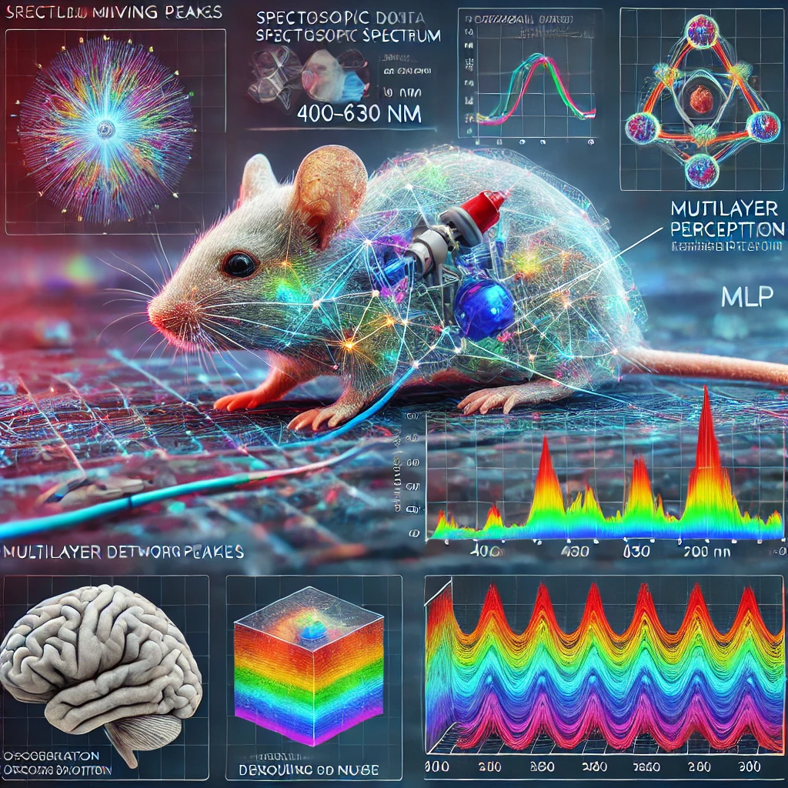
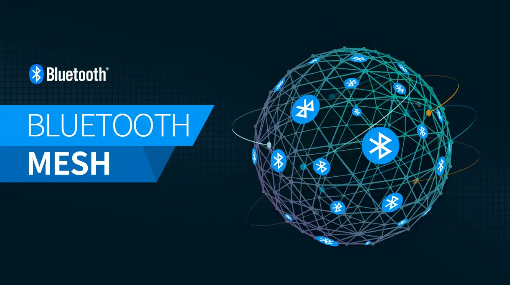
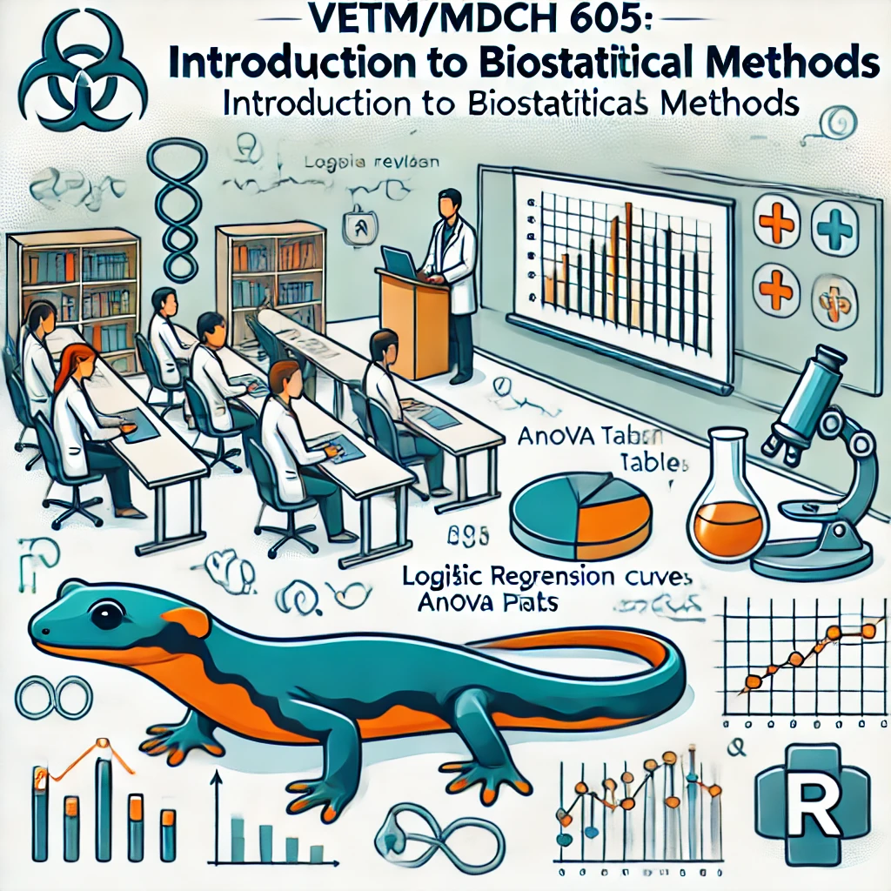
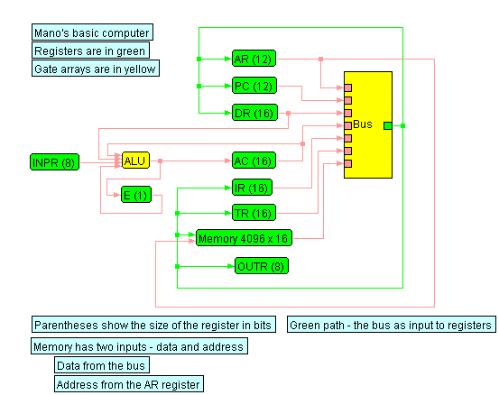
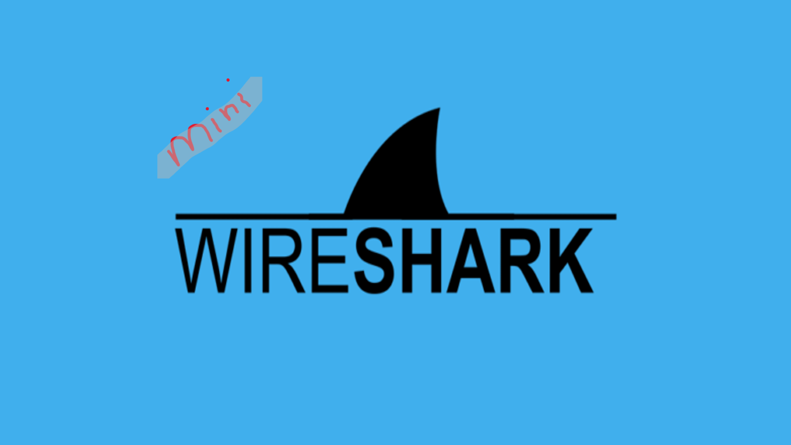
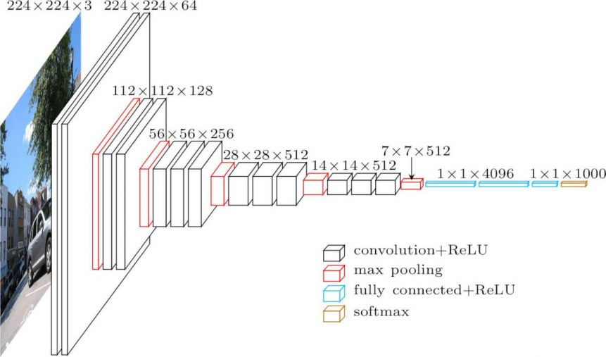
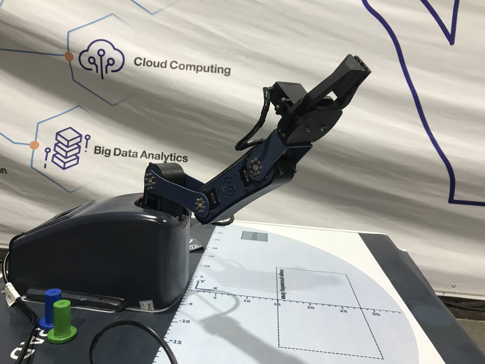
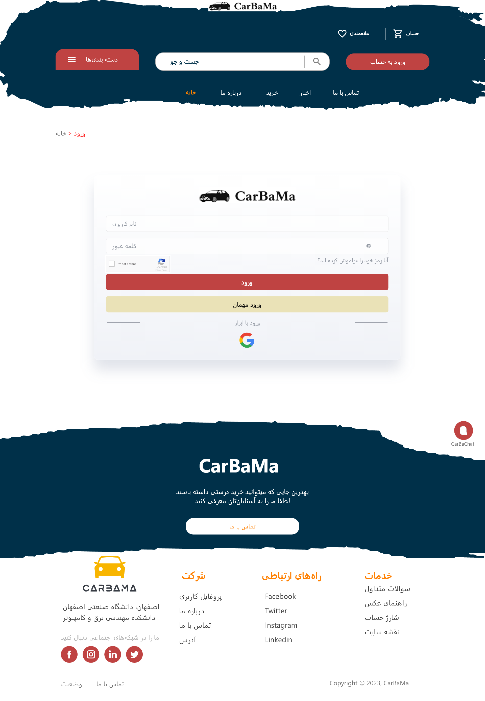
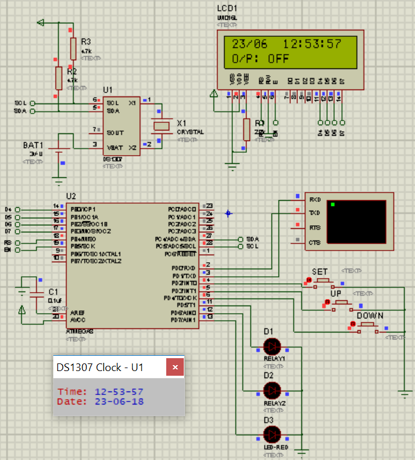

Smart Speed Bump
A model of smart bumper with embedded system elements that modifies it height with the speed of accrossing vehicles.
first, detection speed with two lazers and LDRs and second, determine the proper height and the last, give pulse to the motor to do so.
Using STMf103 with ARM architecture as a brain of this cyber physical system. The conference paper "Intelligent Traffic Control with Smart Speed Bumps" which was presented in the 7th International conference on IoT and its application, Isfahan, Iran. The codes can be accessible trough here.

Neural Network Applications in SO₂ Saturation Monitoring
As part of my ENEL 645 coursework, I developed a project focusing on the application of neural networks in spectroscopic analysis for oxygen saturation (SO₂) monitoring. Utilizing diffuse reflectance spectroscopy and multilayer perceptrons (MLP), this project aims to provide accurate and real-time estimations of oxygenation levels in biological tissues.
View Code on GitHub

BMSim Simulator
An Event-Driven Simulator for Performance Evaluation of Bluetooth Mesh Networks.
some of my simulations using this environment about some real scenarios. visit my codes through my GitHub rep.

Arduino Radar Project
An Arduino(UNO CH340) with an ultrasonic sensor and the servo motor with buzzers and RGB for detecting the distance of
objects and giving feedback with serial monitor and UI. The UI is implemented with the JAVA processing environment.
You can see the video of working here.

Computer Vision
I had an amazing time working on many classical computer vision algorithms implemented in MATLAB. For example, I worked on content-based image retargeting systems, seam carving, puzzle solvers, salt and pepper noise removal, and retinal blood vessel segmentation, among others. These projects allowed me to explore the fascinating world of computer vision and develop my skills in this field. You can help yourself by running and providing feedback on my codes through my GitHub repository. I am always looking for ways to improve my works.

VETM/MDCH 605 - Biostatistics
This course explored advanced biostatistical methodologies applied to health and ecological datasets. Topics included analysis of respiratory rates in children utilizing ANOVA and regression models, investigating environmental factors like zinc, copper, and temperature on protein levels in minnow larvae using ANCOVA, and logistic regression models to predict salamander presence based on distance and terrain types. The course emphasized practical applications of statistical models in biological and medical contexts, supported by comprehensive R programming exercises.
You can access the full repository and details here: View Code on GitHub.

Golestan
A Golestan-Like model project for the Advanced programming course at IUT Implemented in C# (WinForms). You can visit
the open-source code.

Mano Simulator
A basic computer stimulator from the course computer architecture at IUT is implemented in C# windows forms. Please see the open source here.

Azmoon Sanj Daghigh
My Industrial Project is about developing a website for Azmoon company.
It's an automation service for calibration procedures. It is implemented in the .NET core environment with MVC architecture. It is still in the development phase. But you can see the Desktop-based demo version here.

Mini-Wireshark
A simple project to create a mini Wireshark and mini Nmap for capturing TCP_syn packets in the Computer Networks course at IUT. It is
about manipulating the packets and seeing which port is empty. You can access the code here.

Cisco packet tracer
Implementation of different scenarios in Cisco packet tracer environment and, after that, sending a packet and
Debugging the whole Network for the last project in Network Lab at IUT. also implement these scenarios with real
Cisco switches and routers in the Lab. you can have the implementation files here.

Verilog coding
Design and implement some digital elements with Verilog hardware description language(HDL), like combinational and sequential circuits.
The codes are in Three commonly understood levels of abstraction: behavioral, register-transfer-level (RTL), and structural.
Test and run them in ModelSim.
After that, synthesize them in ISE Xilinx.
You can see more detail about it on GitHub.

Vgg16 Transfer learning
Using a pre-trained vgg16 model for evaluation of the MNIST data set.
Freeze the inside neurons and add some fully-connected layers to change the aspect of input data.
The PyTorch library helps to achieve that.
The project of this code and also CNN are available on my GitHub.

Garbage Classification System
Developed as part of my ENEL645 coursework during my master, this project uses a multimodal AI approach to classify garbage
into Green, Blue, Black, and Other bins. It combines image recognition
(ResNet/MobileNet) with NLP models (BERT/Transformers) for accurate predictions. The system promotes
sustainable waste management by aligning with Calgary's recycling initiatives.
Read the Proposal |
View Code on GitHub

Manipulators
Some of my manipulating with manipulators in the robotic lab.
such as forward and inverse kinematics and imitation of human behaviors.
all of the codes are implemented in python and you can access some of it on GitHub here.

Bachelor's Project
Edge Computing Empowers Federated Learning in Resource-Constrained IoT Networks -
Access the pre-printed file through researchgate
- Simulation files and LaTeX source file are available on GitHub.

Mininet project
Using a mininet environment to create Software Defined Network (Hosts, controller, links, etc) to design one feasible scenario as a running network.
creating alternative flows with python language to change the behavior of the switches.
please go dive into and access the codes through my GitHub repo here.

CarBaMa
It is a software platform that makes your trades easier than ever.
Its supports all types of vehicles such as cars or motors.
we have done all of the planning and design phases but not dive into the implementation yet, so as a matter of fact it is conceptual for now.
you can visit all of the detailed documentation in the GitHub repo here.

ATMega16/32 programming with CodeVision AVR
Implementation of different scenarios in the Proteus environment and, after that,
running and Debugging the whole circuit for the last project in the microprocessor Lab. at IUT. Also,
implement these scenarios with real microprocessors and packages in the Lab. you can have the implementation files here.
{kind=link}
{kind=link}
{kind=link}
{kind=link}
{kind=link}
{kind=link}
{kind=link}
{kind=link}
{kind=link}